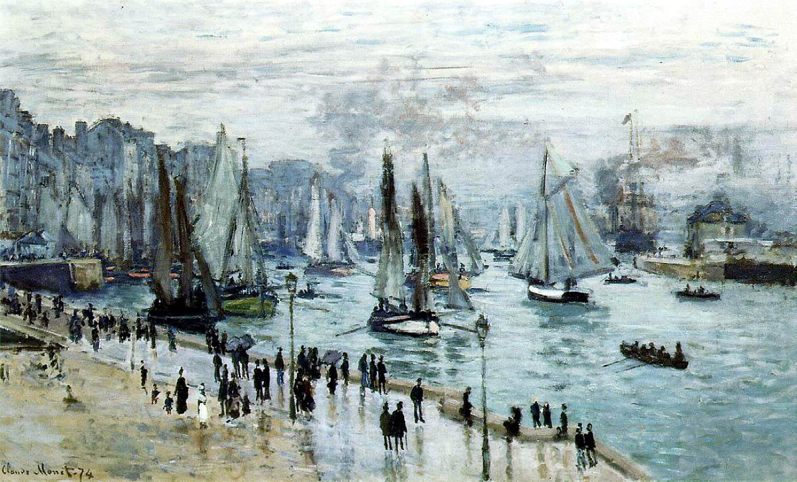

Tags: boats-and-ships, moles-and-embankments, Normandy
Style: Impressionism
Artist: Monet Claude
Title: Fishing Boats Leaving the Harbor, Le Havre
Year: 1874
Genre: cityscape
Categories: lakeside (30.6%); cliff (20.6%); alp (12.9%); seashore (12.4%); promontory (5.1%)